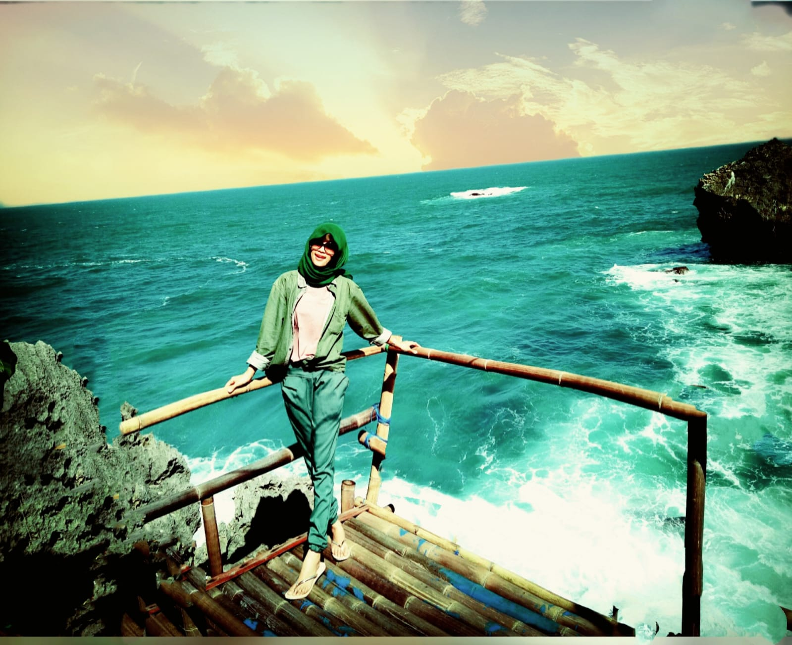
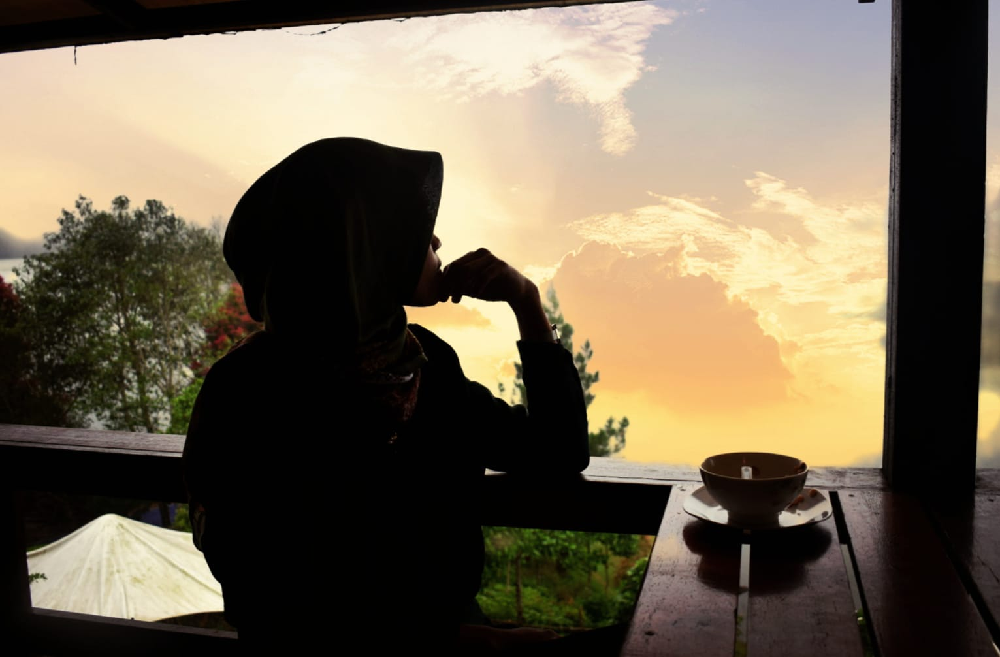
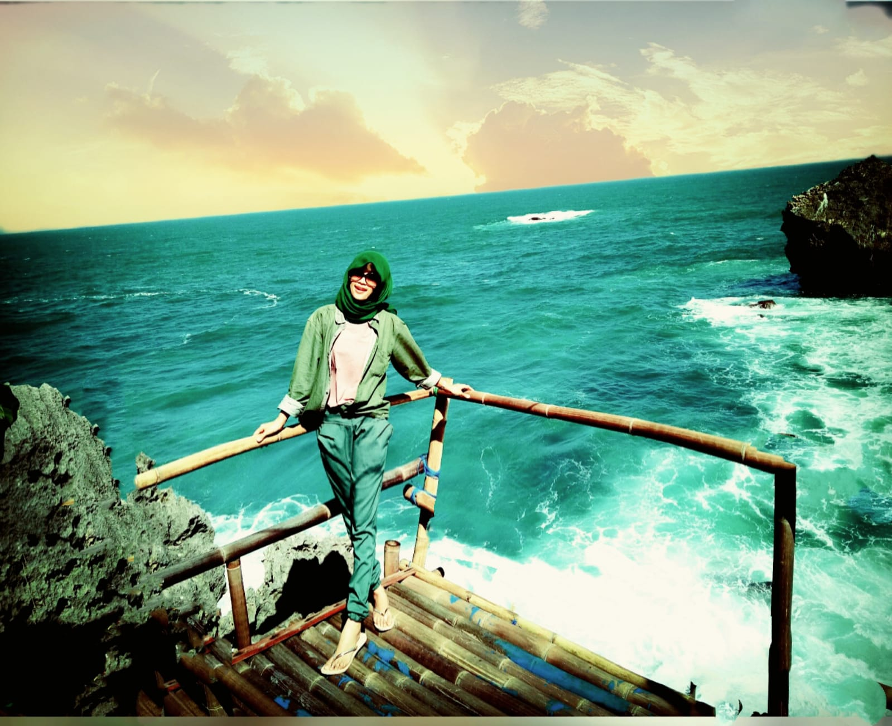
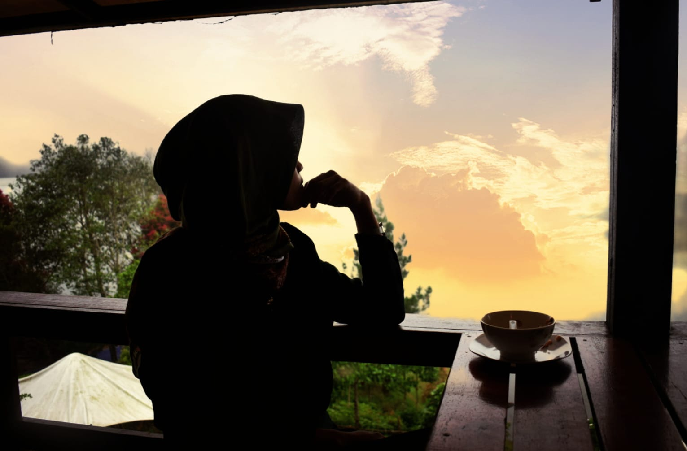
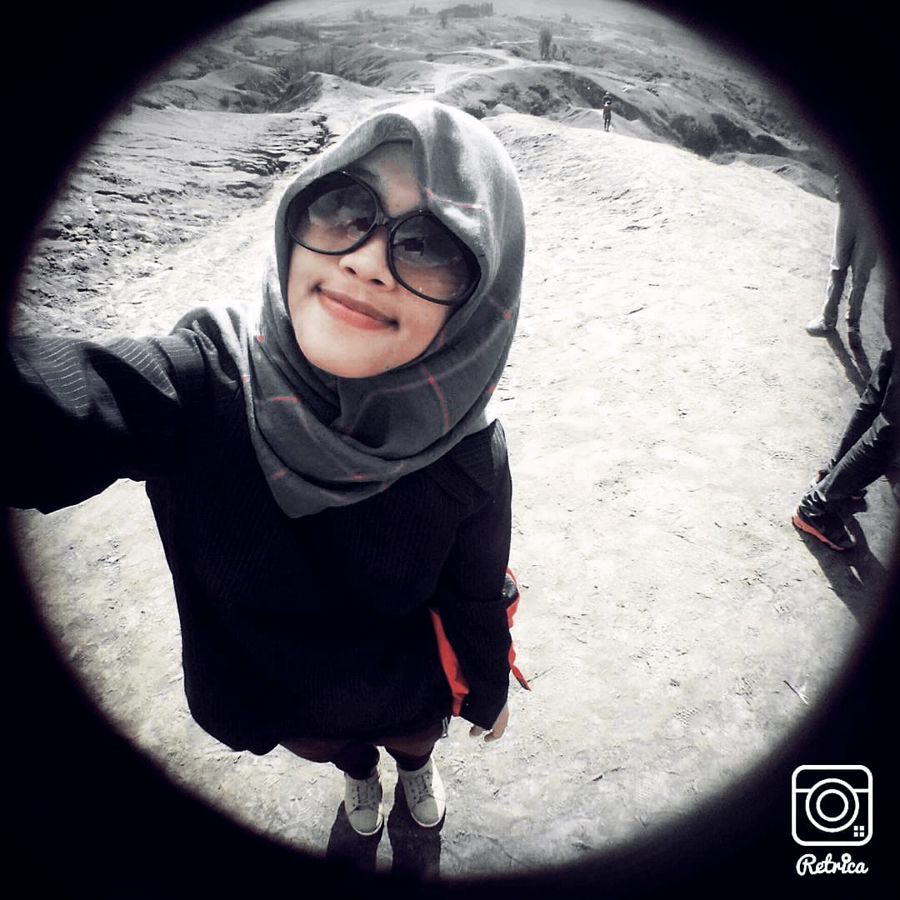
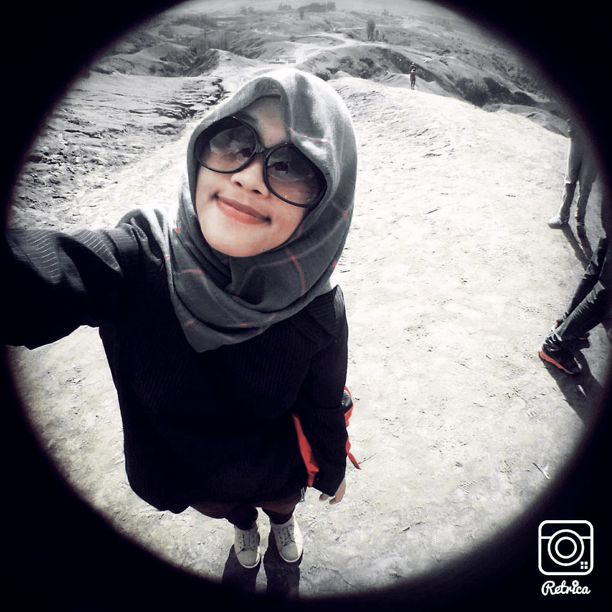
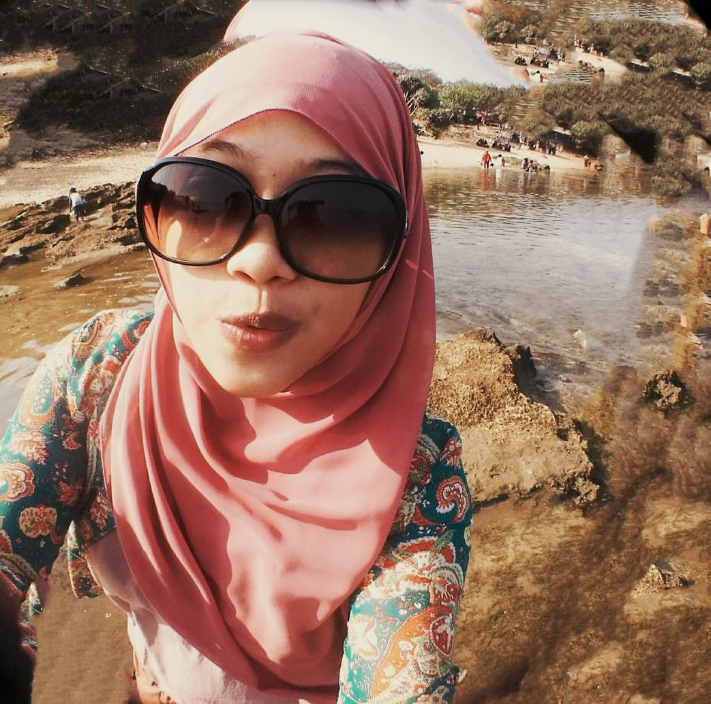
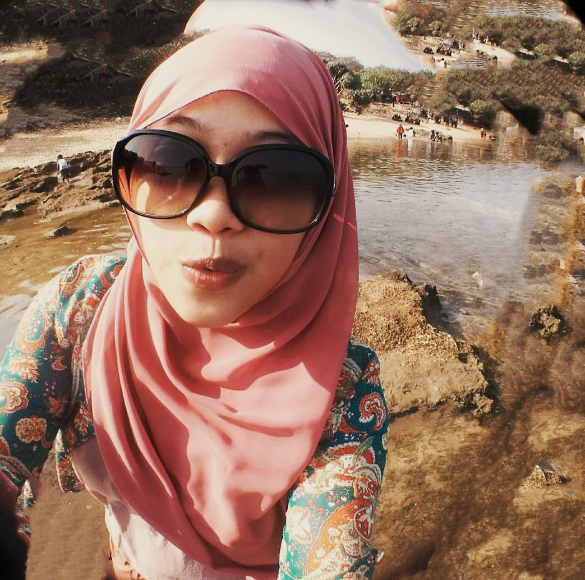

about
Developer
Web developer adalah programmer yang bertugas membuat dan mengembangkan website atau world wide web. Secara garis besar, tanggung jawab web developer adalah membangun sebuah website atau aplikasi dan memastikan performa website tetap optimal. Meski begitu, profesi ini memiliki cakupan yang luas. Itulah mengapa, jenis web developer digolongkan berdasarkan peran dan area yang dikuasai: Back-end developer. Pengembang web yang pekerjaannya berkaitan dengan server. Mereka bertanggung jawab memastikan agar akses website selalu cepat, aman, dan berfungsi sesuai tujuan penggunaannya. Front-end developer. Mendesain antarmuka website. Tujuannya, agar website memiliki tampilan yang baik dan fitur-fitur yang mudah digunakan pengunjung. Full-stack developer. Web developer yang melakukan pekerjaan front-end dan back-end sekaligus. Full-stack developer harus mampu membuat tampilan dan fitur website, sembari mengoptimalkan kecepatan dan keamanannya dari sisi server
 



 

 
